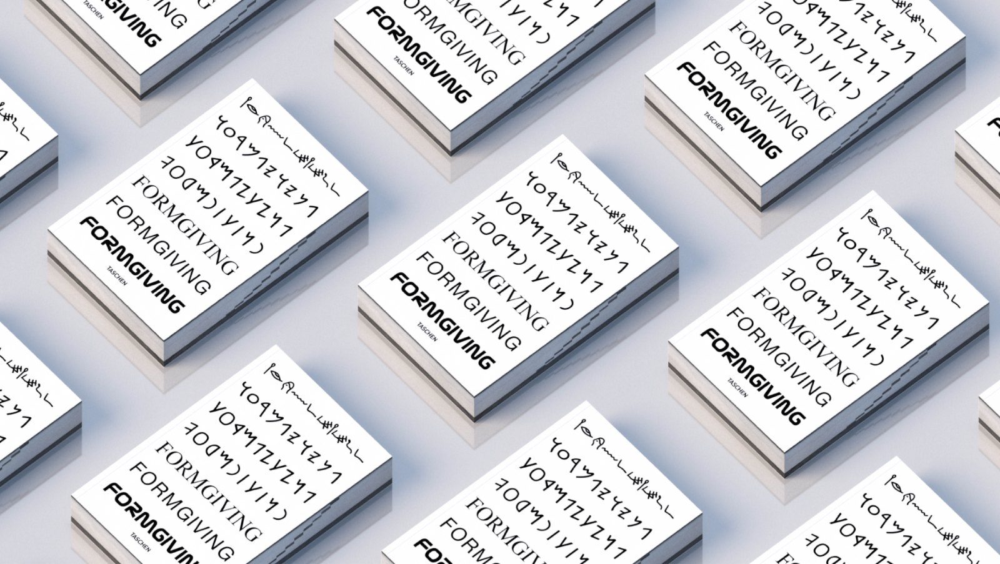
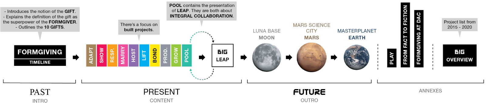
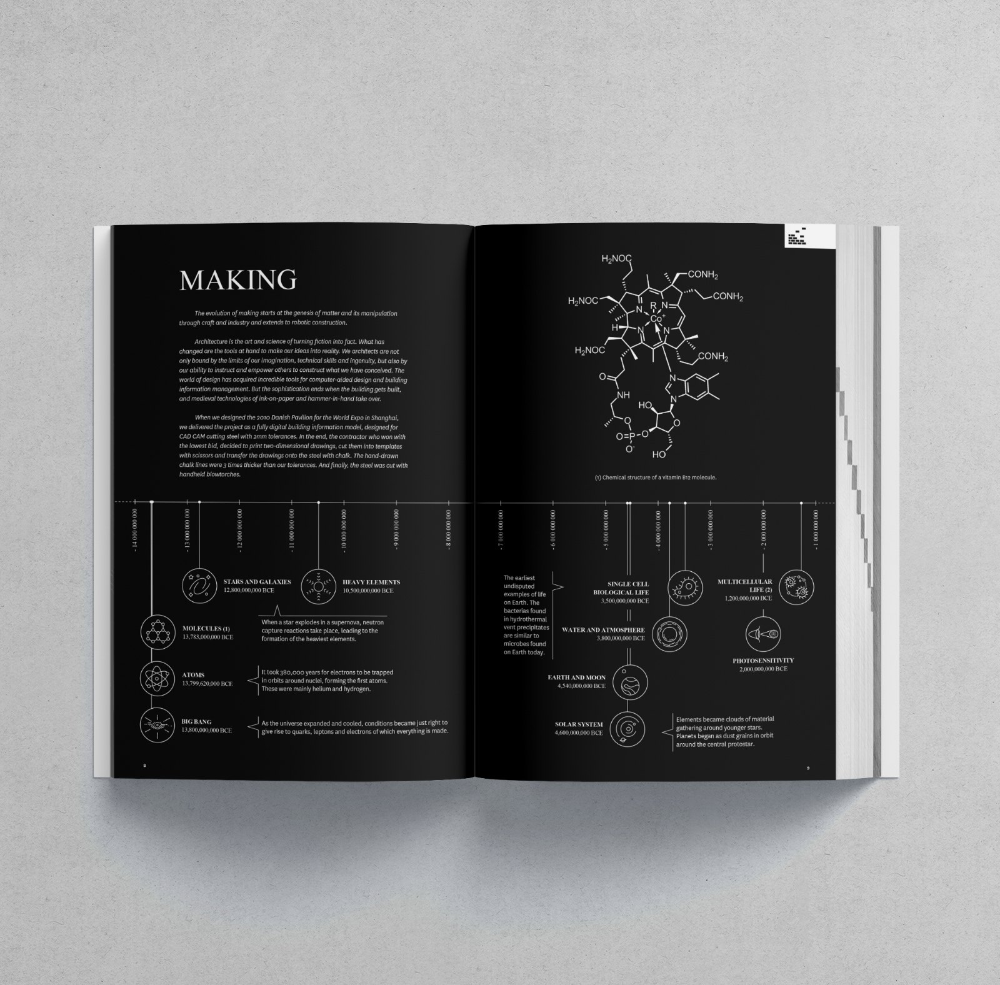
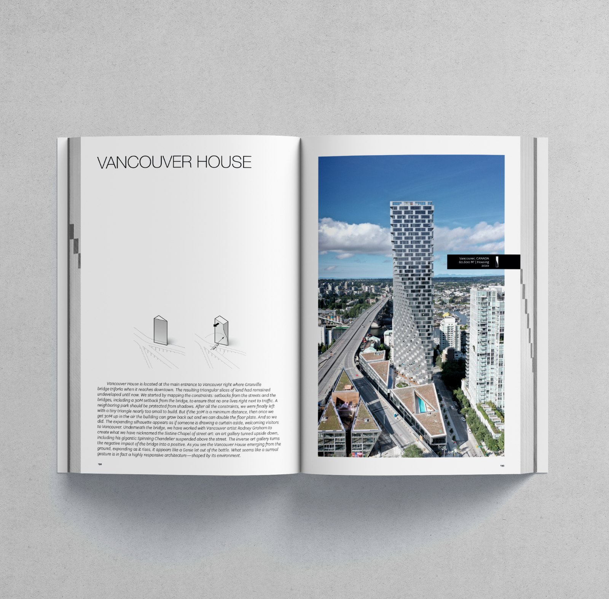
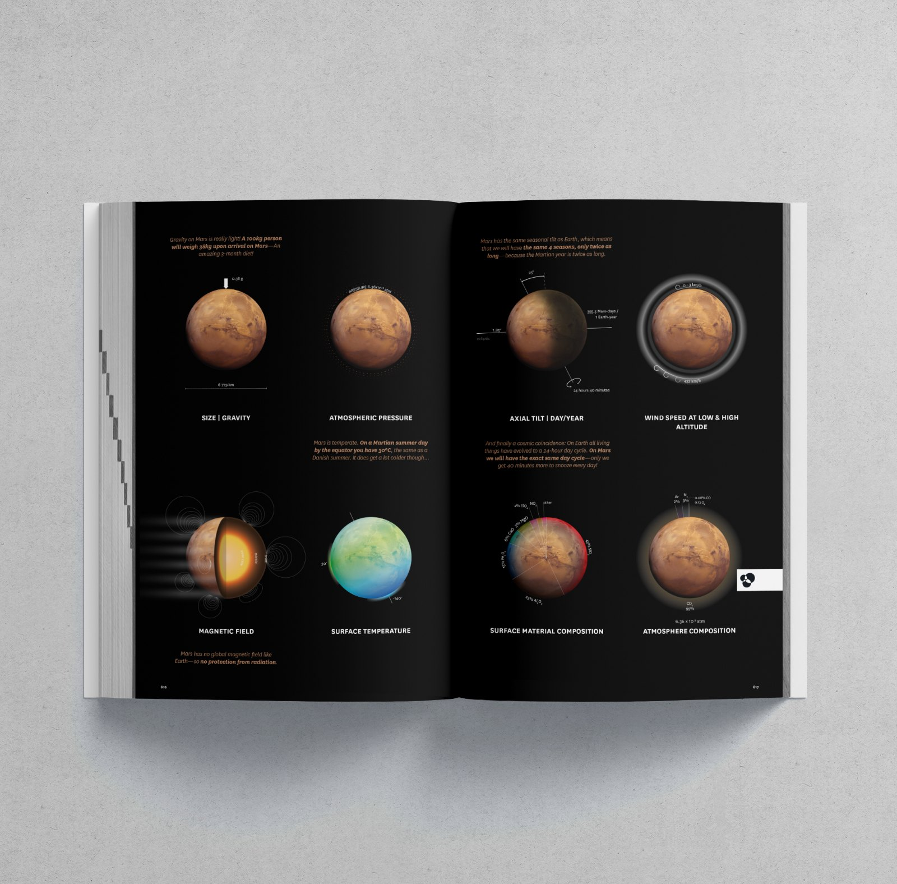
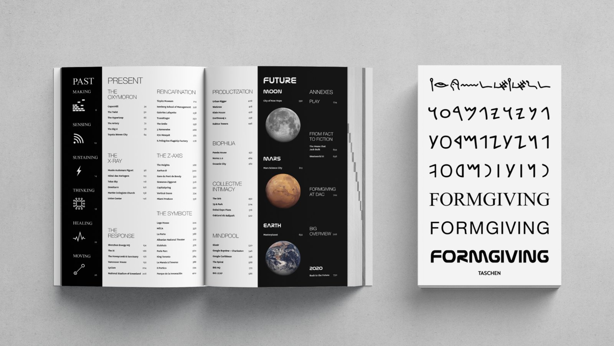
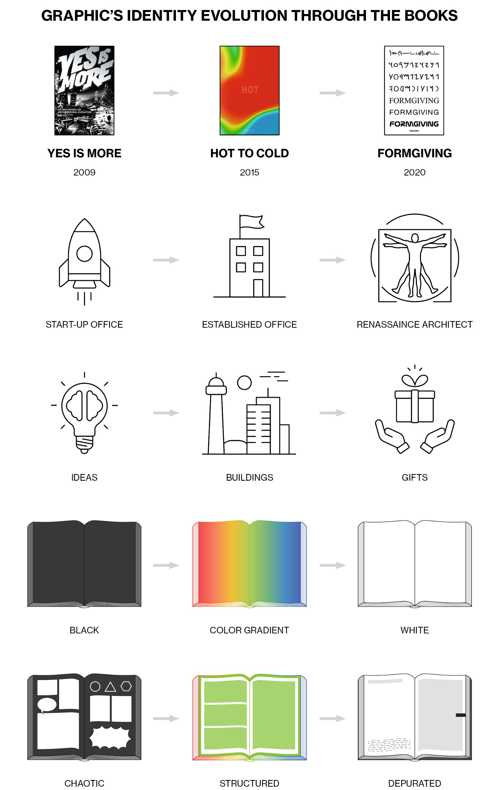
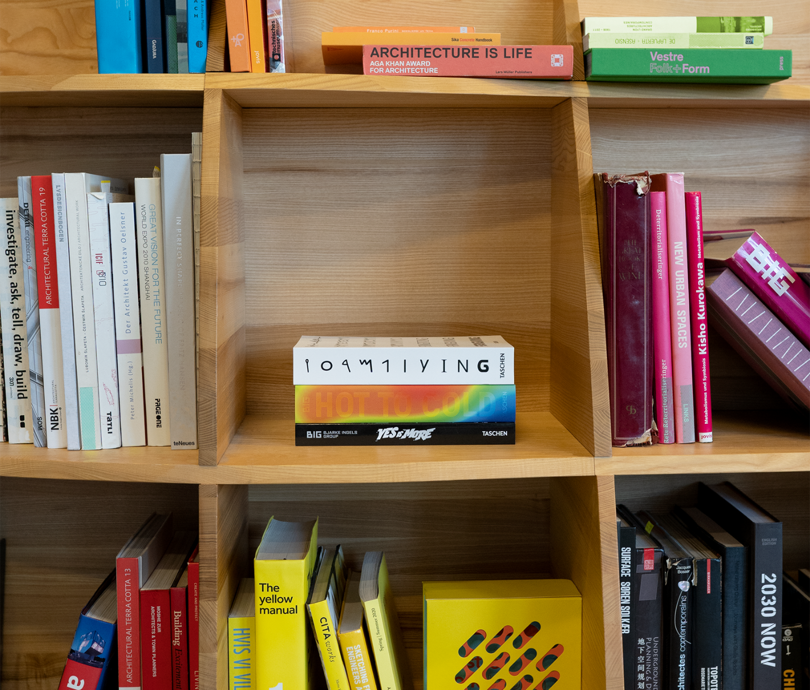
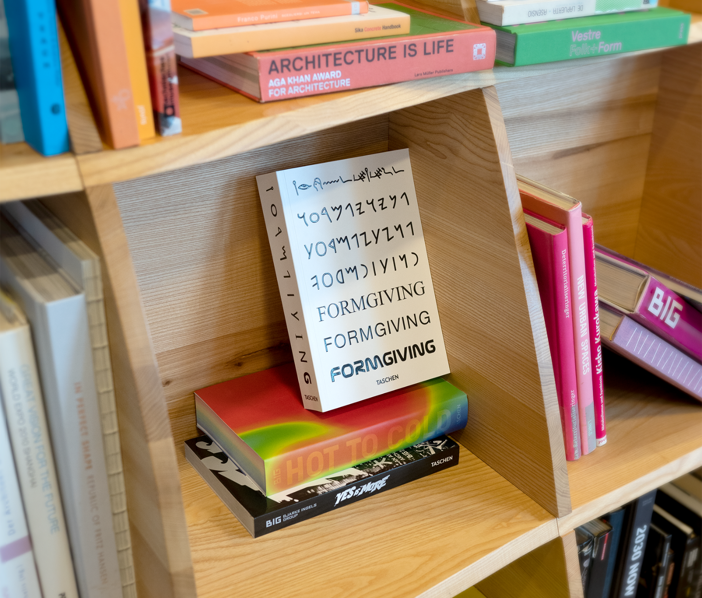
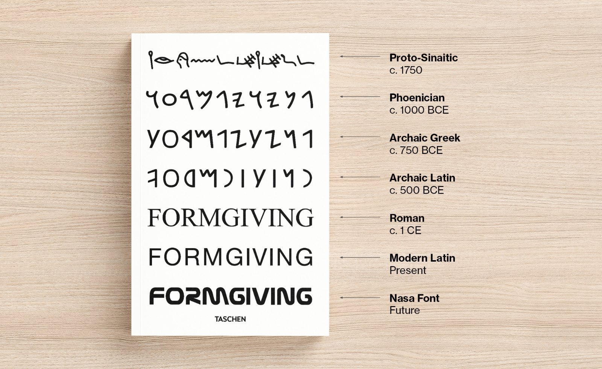

Formgiving Book
As the Lead Graphic Designer at Bjarke Ingels Group (BIG), I led the team that developed this catalogue, which accompanied the exhibition of the same name at the Danish Architecture Center in Copenhagen.
Formgiving is a visionary attempt to look at the horizon of time. The Danish word for “design” is “formgivning,” which literally means to give form to that which has not yet taken shape. In other words, to give form to the future. Using our power to give form, rather than allowing the future to take shape, is more important now than ever, as humankind’s impact on the planet continues to increase and pose ever greater challenges to all life forms.
Team: Paula Madrid, Geetika Bhutani, Ipek Akin, Jesslyn Guntur, Morgan Day

The book is presented in a timeline, stretching from the Big Bang into the most distant future. Projects are structured around six strands of evolution: “Making,” “Sensing,” “Sustaining,” “Thinking,” “Healing,” and “Moving” the multimedia-based, interdisciplinary concepts encompassing the building industry.




It introduces the concept of the “10 Gifts” -- design elements that go beyond solving a problem to actively enhance the human experience. These gifts, such as sustainability, biodiversity, play, and social interaction, are intentionally embedded in projects to offer added value for both users and the wider community. Rather than designing just for function, BIG sees architecture as an opportunity to give something back -- to make buildings that are generous, engaging, and future-ready.

Formgiving is the third and final installment in Bjarke Ingels Group’s trilogy of architectural monographs with TASCHEN, following Yes is More (2009) and Hot to Cold (2015). Together, these books chart the evolution of BIG’s design philosophy and practice.



The cover art illustrates the transformation of the word "formgiving" from archaic glyphs to futuristic typography. This design choice reflects the intent to connect the past, present, and future, emphasizing the role of design in giving form to concepts that have yet to materialize.
The progression from ancient symbols to modern typefaces on the cover encapsulates the book's journey through time, from the Big Bang to speculative futures, reinforcing the idea that architecture and design are continuous processes of transformation and innovation.
